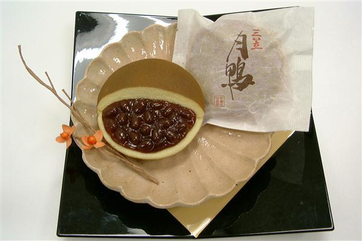

Front of the Card
Back of the Card
Japanese
English
Audio: NHK Creative Library
Read by LibriVox volunteer Larry Wilson.
Audio courtesy of LibriVox
阿倍仲麻呂
天の原
ふりさけみれば
春日なる
三笠の山に
出でし月かも

みかさのや
まにいてし
つきかも
あまの
- Poem 7
- 天の原
ふりさけみれば
春日なる
三笠の山に 出でし月かも
Author: Abe no Nakamaro (698–770)
Source: Kokin Wakashū, Travel
- English Verse Translation
- While gazing up into the sky, My thoughts have wandered far; Methinks I see the rising moon
Above Mount Mikasa At far-off Kasuga.
— William N. Porter, 1909
- Modern Translation
- Looking up at the vast sky, I see the moon. Is that the same moon that rose over Mount Mikasa in Kasuga, so long ago?
- Commentary
- The Kokin Wakashū says this was "written while looking at the moon in China." Abe no Nakamaro wrote it at a farewell party in Mingzhou (now Ningbo) as he was leaving for home after many years in Tang China. At Mount Mikasa, envoys to China are said to have prayed for a safe voyage.
- About the Poet
- Abe no Nakamaro went to Tang China as a student in his late teens. He passed the imperial exams in his twenties and served Emperor Xuanzong in high posts. Too valued to be let go, he set out for home only after 50, but his ship was blown to Vietnam by a storm. He returned to Chang'an and died there at 73.
- Poem Illustration
-

This image is based on an illustration from William N. Porter's A Hundred Verses from Old Japan, his 1909 English translation of the Hyakunin Isshu published in England, colorized and reworked using Adobe Firefly (generative AI).
- Abe no Nakamaro: A Short Timeline
-
- 698
- Born as the eldest son of Abe no Funamori
- 717
- Goes to Tang China with a Japanese mission and studies in Chang'an
- 725
- Becomes an official of the Tang government
- 733
- Asks to return home, but is not allowed
- 753
- His ship home is wrecked and drifts far south
- c. 760
- Becomes military governor of Annam (in present-day Vietnam)
- 770
- Dies in Tang China
- Appendix
-
- Kasuga Taisha Shrine at the Foot of Mount Mikasa
-

This shrine stands in a corner of Nara Park, at the foot of Mount Mikasa, and honors the guardian gods of the Fujiwara clan. The fields of Kasuga around it are a sacred place surrounded by gentle nature, where people have prayed since ancient times. Far away in Tang China, Abe no Nakamaro may have looked up at a foreign sky, picturing the moon over these fields of Kasuga.
- A Tasty Japanese Sweet, "Tsukikamo"
-

"Tsukikamo" is a dorayaki (a pancake sandwich with sweet bean paste) from Kanshundo, a long-established Japanese sweets shop in Kyoto. Its name comes from Abe no Nakamaro's Hyakunin Isshu poem.
- The Sea Routes of the Envoys to Tang China
-

Click to enlarge. The envoys to Tang China left from Naniwa (Osaka), sailed through the Seto Inland Sea to Hakata, and crossed to China from there. At first they used the "northern route" along the Korean Peninsula, but when relations with the Korean kingdom of Silla grew worse, they switched to the "southern route," crossing the open sea away from Korea. The ships had no compass, and on the southern route there were no landmarks to guide them, so the voyage was far more dangerous and difficult than on the northern route.
- A Poem by Fujiwara no Kiyokawa
-
Fujiwara no Kiyokawa was one of the envoys who, like Abe no Nakamaro, hoped to return home. But he too never made it back, and died in Tang China. He wrote the next poem before leaving for China.
In Japanese
春日野に 斎く三諸の 梅の花
栄えてあり待て 帰り来るまで kasuganoni itsukumimorono umenohana
sakaetearimate kaerikurumade Man'yōshū, Fujiwara no KiyokawaIn English
Plum blossoms at the sacred shrine in the fields of Kasuga,
please keep blooming beautifully,
and wait for me until I return. - Li Bai's Poem on Hearing of Nakamaro's Death
-
In Tang China, Abe no Nakamaro was friends with Chinese poets such as Li Bai and Wang Wei. The next poem is Li Bai's "Weeping for Chao Heng," a poem of four lines with seven characters each. "Chao Heng" was Nakamaro's Chinese name. Li Bai wrote it in grief when he heard that Nakamaro's ship had been lost at sea.
In Chinese
日本晁卿辞帝都
征帆一片遶蓬壷
明月不帰沈碧海
白雲愁色満蒼梧
As read in Japanese:
日本の晁卿、帝都を辞し
征帆一片蓬壺を遶る
明月帰らず碧海に沈み
白雲愁色蒼梧に満つIn English
Chao Heng of Japan left the capital, Chang'an,
and on a single small boat
tried to cross the great eastern sea.
But he, as noble as the bright moon,
sank into the blue sea and never returned.
White clouds, full of sorrow, fill the sky over Cangwu.Chao Heng: Abe no Nakamaro's name in China.
Penghu (Hōko): a legendary mountain believed to lie in the eastern sea. Some read it as meaning Japan.
Cangwu (Sōgo): a place in eastern Guangxi.
- A Symbol of Japan–China Friendship: The Abe no Nakamaro Monument
-

Indiana jo, CC BY-SA 4.0 , via Wikimedia Commons A monument to Abe no Nakamaro stands in a park on the site of the Xingqing Palace in Xi'an, China (the old capital, Chang'an). It was built as a symbol of friendship between Japan and China, inspired by the friendship of Nakamaro and Li Bai. On its sides are carved a Chinese translation of Nakamaro's Hyakunin Isshu poem and Li Bai's poem "Weeping for Chao Heng," written when he heard of Nakamaro's death. See it on the map
- Ukiyo-e by Katsushika Hokusai
-

Katsushika Hokusai; Katsushika Hokusai died 1849-05-10; Nishimura Yohachi, Public domain, via Wikimedia Commons This print is from One Hundred Poems Explained by the Nurse (Hyakunin Isshu Uba ga Etoki) by Katsushika Hokusai, an ukiyo-e artist of the Edo period. The idea of the series is a nurse explaining the Hyakunin Isshu poems with easy-to-understand pictures. It shows Nakamaro gazing out to sea. Surely he is looking at the eastern sea and thinking of his homeland. The moon floating on the water and the flags streaming in the east wind are also striking.
- Utagawa Kuniyoshi's Hyakunin Isshu no Uchi
-

British Museum, Public domain, via Wikimedia Commons This ukiyo-e is by Utagawa Kuniyoshi, an artist of the Edo period.
It shows a scene that matches the poem in the Hyakunin Isshu. - Tsukioka Yoshitoshi's One Hundred Aspects of the Moon
-

Yoshitoshi, One Hundred Aspects of the Moon: "Ama no hara furisake mireba Kasuga naru Mikasa no yama ni ideshi tsuki kamo", Akiyama Buemon, 1888. National Diet Library Digital Collections https://dl.ndl.go.jp/pid/1306326 (accessed 2024-06-29) This ukiyo-e is by Tsukioka Yoshitoshi, an artist active from the end of the Edo period into the early Meiji period. The figure on the right is probably Abe no Nakamaro, gazing at the moon over the great sea while longing for the moon over the fields of Kasuga. The figure on the left is not known; it may be one of the poets Nakamaro befriended, such as Li Bai or Wang Wei.